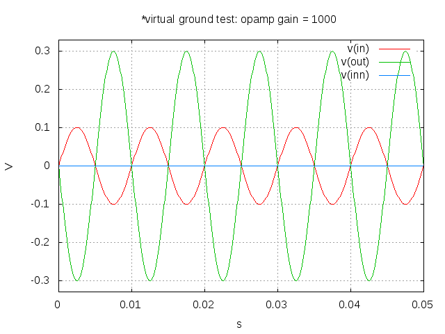
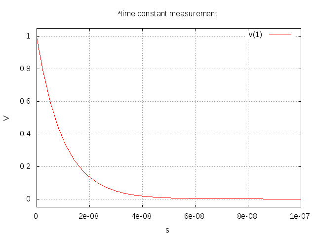

Tiago Oliveira Weber
Simulating Circuits with Emacs, Org-mode, Babel and Ngspice
by Tiago Oliveira Weber
Picture this. You are creating a report, studying or preparing a class. While you write your text, you suddenly feel that it is time to show in a circuit how your project works. Now the adventure begins: to add the results of a given simulation to your document, you will have to open your simulation software in another window, describe the circuit using a schematic editor, simulate it and then copy and paste the results to your text file. You might as well copy the image of some waveforms. Additionaly, you will also have to describe the circuit elements in such a way that the reader of your report knows what you have simulated.
In this process a lot can be lost: the quality of your schematic screenshots may or may not be a delight to the eyes, but even if the quality is great, there is still a lot of information that is not accessible through an image of the schematic. These can be the various component properties, simulation parameters and component models. In top of that, if you are like me, you will probably spend a lot of time editing and working with the waveforms to make them fit well in the report. And this is usually made either with an image editor (such as Gimp or Inkscape) or with gnuplot (if you're performing the additional step of exporting the data out of the simulator). After you are done, if anything needs a change, you will have to repeat all this endeavor once again, for every change. In other words, you'll spend more time working with "report matters" than with conceptual matters.
Now here comes Emacs, Org-mode and Babel to save you. If you have never worked with Emacs and you like programming, drop all you are doing and give it a great share of attention. Now, I admit it is hard to explain Emacs philosophy without sounding like a preacher. So I will make no such attempt, and will just say it is a customizable (programmable) text editor which may fit your every need according to how you program it. Get a full spoon of Emacs tutorials and go for it. On the other hand, Org-mode, which is an Emacs mode, may have the power to fix your messy life (or improve your already organized one).
But let us get back to our original problem. While using Emacs and Org-mode, you can add snippets of executable code through Babel. Now here comes the magic. According to the official Org-mode site, "Babel is Org-mode's ability to execute source code within Org-mode documents". While you add code to your report, you can actually run it and have its results directly added to the report. Doing that, you end up with a live document. It will update (results, graphs, text) according to your modifications in the code. This relates with the concept of literate programming and reproducible research.
So now you probably already understand what we are going to do. We will treat our circuit as code (a netlist) and pass it to a spice simulator to run. After it runs, we will get its outputs and add them automagically in the report. Here is an example (the source code fontification is due to spice-mode):
*Virtual Ground Test: opamp gain = 1000 vin in 0 dc 0V sin(0 0.1 100Hz) r1 in inn 10k r2 inn out 10k EOpamp out 0 0 inn 1000 .tran 0.1ms 0.05s .print tran v(in) .meas tran vtest find v(in) at=0.04e-3 .end .control run set gnuplot_terminal=png gnuplot $file v(in) v(out) v(inn) .endc

Advantages and Disadvantages
Advantages
- You can make changes to your circuit very easily and have them added to the report
- You don't need to leave emacs to simulate
- As in babel you can work with any language you desire and mix results from different code blocks, you can take results from your circuit and feed them into a matlab code, verilog, VHDL, verilog-a,… Also, you can take results from other code block and feed it in your circuits.
- As you will be working in Org-mode, you will be able to export your results to any format supported by it, like latex or html. For instance, this webpage (together with the simulation code) was made entirely in Emacs.
Disadvantages
- You will have no schematic image of the circuit (It would be interesting to create an netlist-to-schematic converter in elisp to workaround this)
- Working directly with netlists may require more knowledge of the circuit and the simulator than using GUI for schematic edition.
Basic Setup
What you need is basically
- Emacs and Org-mode (already in Emacs)
- spice-mode (by Carlin J. Vieri) or its newer version (by Van der Plas, Rouat and Vieri)
- htmlize (if you want fontified netlist export to html)
- ob-spice (described below) or some variation created by you
- a spice simulator capable of running in batch mode (from command line). In my case, I used Ngspice.
The ob-spice
The community has built a wide range of language support for Babel. However, I could not find spice in this list or anything related to spice simulation. Therefore, I created my own, which is admittedly in a very early stage of development. However, as it already does the job (at least for my needs) I decided to share it here.
You will need to add something like this to your Emacs config to load this file:
(add-to-list 'load-path "~/.emacs.d/ob-spice/") (require 'ob-spice)
When adding the netlist, you should create a header like the following (this is the one I used to create the previous opamp simulation):
#+BEGIN_SRC spice :results drawer :exports both :var file="amplifier_vcvs_1000" ... your netlist here ... #+END_SRC
In this example, the variable "file" is the name of the png file that will be created by ngspice and included in the report.
Exporting to PNG
You need to add the line "set gnuplot_terminal=png" in the control section of your Ngspice code. If you don't, Ngspice will export to eps, which will not be previewed in Org-mode. It is my intention to add this control option as default to ob-spice.
Fontification
Using the original spice-mode (or its newer version) the fontification for spice circuits is recognized by babel in the buffer. If you use the newer version, it is all fine (I thank Colin for pointing this new version on the comment section). If you use the original spice-mode version together with htmlize, however, there is a problem due to the use of the function make-local-hook in spice-mode.el as it is no longer supported in Emacs. To solve the problem, I just had to comment all lines that use make-local-hook function. It seems that removing those lines solved the problem without creating additional ones.
Removing Ngspice plot persistence
If you, like me, dislike having to close the plot window every time you simulate your circuits, this tweak in Ngspice spice might do the trick. For it, you will have to download the source code of Ngspice and change 1 line of code.
I downloaded ngspice-26.tar.gz and altered "ngspice-26/src/frontend/plotting/gnuplot.c" to disable the persistence of gnuplot.
I commented the line 245 and added a slightly changed version: just removed the "-" from the gnuplot options.
// (void) sprintf(buf, "xterm -e gnuplot %s - &", filename_plt); (void) sprintf(buf, "xterm -e gnuplot %s &", filename_plt);
After that, you need to run ./configure, make and make install. That's it, no more persistence.
Another example: Measuring and plotting values of a RC circuit
*Time Constant Measurement r1 1 0 10k c1 1 0 1p .IC V(1)=1 .tran 1n 0.1u .print tran v(1) .end .control run set gnuplot_terminal=png gnuplot $file v(1) meas tran value_at_tau find V(1) at=1e-8 meas tran value_at_five_tau find V(1) at=5e-8 echo value_at_tau = "$&value_at_tau" > $file.txt echo value_at_five_tau = "$&value_at_five_tau" >> $file.txt .endc
| value_at_tau = 0.36798value_at_five_tau = 0.00671732 |  |
Final Words
Using Emacs and Org-mode to run codes within a live document is an extremely useful productivity technique. In the case of spice circuits, it might help to create a bridge between simulating circuits, creating reports and interacting with different programming languages.